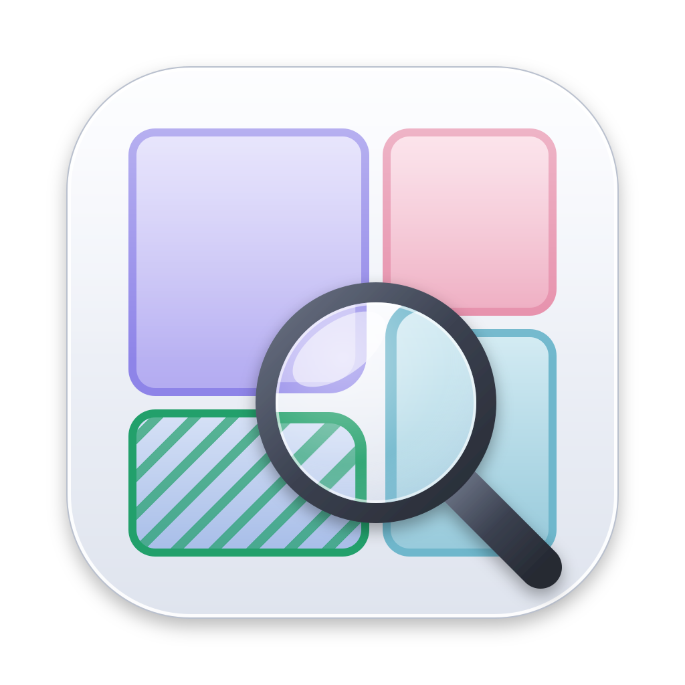

<!doctype html>
<!--
  DiskLens v2 mockup (PRD section 13.5). Source of docs/mockup-v2.png and
  docs/mockup-v2-dark.png; regenerate both with scripts/render-mockup.sh.
  Append #dark to the URL for the dark board.

  The :root block is the token set Phase 8b copies into src/ui/theme.rs.
  Only effects GPUI can draw are used: solid and alpha fills, 45-degree
  stripes (pattern_slash), rounded rects, dashed outlines and box shadows.
  The sidebar's translucency stands in for WindowBackgroundAppearance::Blurred.
  Numbers come from assets/mock/snapshot.mock.json; the few it lacks are
  marked "not in mock" where they are defined below.
-->
<html lang="en">
<head>
<meta charset="utf-8">
<title>DiskLens v2 mockup</title>
<style>
:root {
  /* Type (pt = px at scale 1). System font, tabular figures for numbers. */
  --font: -apple-system, BlinkMacSystemFont, "SF Pro Text", system-ui, sans-serif;
  --mono: ui-monospace, "SF Mono", Menlo, monospace;
  --t-large: 28px;   /* large number, semibold */
  --t-title: 20px;   /* page title, semibold */
  --t-head: 13px;    /* headline, semibold */
  --t-body: 13px;    /* body, regular */
  --t-small: 11px;   /* secondary, regular */

  /* Shape and spacing (4 pt grid). */
  --r-widget: 14px;
  --r-tile: 10px;
  --r-control: 8px;
  --gap-content: 16px;
  --gap-widget: 12px;
  --gap-tile: 4px;

  /* Surfaces. No card borders; hairlines only for list separators and the sidebar edge. */
  --desktop: #c9d3e0;                 /* what the blurred window shows through (board only) */
  --sidebar: rgba(234, 234, 238, 0.82);
  --content: #ffffff;
  --widget: #f5f5f7;
  --hover: rgba(0, 0, 0, 0.05);
  --selected: rgba(0, 0, 0, 0.08);
  --separator: rgba(0, 0, 0, 0.1);
  --scrim: rgba(0, 0, 0, 0.18);
  --popover: #ffffff;
  --shadow: 0 10px 40px rgba(0, 0, 0, 0.18), 0 0 0 0.5px rgba(0, 0, 0, 0.12);

  /* Text. */
  --label: #1d1d1f;
  --secondary: #6e6e73;               /* 5.1:1 on --content, 4.7:1 on --widget */
  --tile-secondary: #55555a;          /* size line on tiles: >= 5.0:1 on every fill and stripe pixel */
  --tertiary: #8e8e93;                /* icons and placeholders only, never body text */

  /* System colors. */
  --accent: #007aff;
  --accent-text: #0062cc;             /* links and accent text: 5.8:1 on --content */
  --safe: #34c759;                    /* fills, dots, stripes */
  --safe-text: #1d7a35;               /* 5.4:1 on --content, 4.8:1 on --safe-tint */
  --safe-tint: #e5f6e9;
  --review: #ff9500;
  --review-text: #a34f00;             /* 5.7:1 on --content, 5.1:1 on --review-tint */
  --review-tint: #fff1de;
  --clean: #1e7a34;                   /* Clean up button fill; white text 5.4:1 */
  --clean-text: #ffffff;
  --danger: #d70015;

  /* Category palette: fill for tiles, border for dots and the capacity bar. */
  --cat-code: #e3e0f7;      --cat-code-b: #7b6fe0;
  --cat-ai: #f6dde5;        --cat-ai-b: #d75f86;
  --cat-mobile: #d5ebf2;    --cat-mobile-b: #3a9bba;
  --cat-pkg: #dbe4f5;       --cat-pkg-b: #5a82d1;
  --cat-docs: #f7e3d4;      --cat-docs-b: #dd8a4f;
  --cat-dev: #ebe5d7;       --cat-dev-b: #a6926a;
  --neutral: #ececef;       --neutral-b: #b4b4ba;
  --free: #e8e8ed;

  /* Texture: reduced opacity for disposable and restorable, stripes at <= 20%. */
  --tex-mix: 65%;
  --stripe-alpha: 0.2;
  --dim: 0.45;                        /* Highlight cleanable: Kept and System-managed */
}

:root[data-theme="dark"] {
  --desktop: #2b3240;
  --sidebar: rgba(44, 44, 48, 0.8);
  --content: #1e1e1e;
  --widget: #2a2a2c;
  --hover: rgba(255, 255, 255, 0.06);
  --selected: rgba(255, 255, 255, 0.1);
  --separator: rgba(255, 255, 255, 0.1);
  --scrim: rgba(0, 0, 0, 0.4);
  --popover: #2c2c2e;
  --shadow: 0 10px 40px rgba(0, 0, 0, 0.5), 0 0 0 0.5px rgba(255, 255, 255, 0.14);
  --label: #f5f5f7;
  --secondary: #a1a1a6;               /* 6.5:1 on --content, 5.6:1 on --widget */
  --tile-secondary: #c2c2c7;          /* >= 4.9:1 on every fill and stripe pixel */
  --tertiary: #7c7c80;
  --accent: #0a84ff;
  --accent-text: #409cff;
  --safe: #30d158;
  --safe-text: #30d158;               /* 8.2:1 on --content, 6.7:1 on --safe-tint */
  --safe-tint: #1c3323;
  --review: #ff9f0a;
  --review-text: #ff9f0a;             /* 8.1:1 on --content, 6.7:1 on --review-tint */
  --review-tint: #3a2a12;
  --clean: #1e7a34;
  --clean-text: #ffffff;
  --danger: #ff453a;
  --cat-code: #34304f;      --cat-code-b: #9d93f0;
  --cat-ai: #4a2c38;        --cat-ai-b: #ee8aae;
  --cat-mobile: #1f3a44;    --cat-mobile-b: #6cc0da;
  --cat-pkg: #26324a;       --cat-pkg-b: #86a6e8;
  --cat-docs: #4a3426;      --cat-docs-b: #f0a877;
  --cat-dev: #3d382c;       --cat-dev-b: #c9b78e;
  --neutral: #2e2e32;       --neutral-b: #5a5a60;
  --free: #3a3a3e;
}

* { box-sizing: border-box; margin: 0; padding: 0; }
body {
  font: var(--t-body)/1.38 var(--font);
  color: var(--label);
  background: var(--board, #dcdce1);
  -webkit-font-smoothing: antialiased;
  font-variant-numeric: tabular-nums;
}
:root[data-theme="dark"] body { --board: #0e0e10; }
.num { font-variant-numeric: tabular-nums; }
.mono { font-family: var(--mono); font-size: 11.5px; }
.secondary { color: var(--secondary); }
.small { font-size: var(--t-small); }
.head { font-weight: 600; }

/* Board */
.board { display: grid; grid-template-columns: repeat(2, 1280px); gap: 56px 40px; padding: 48px 40px; width: max-content; }
.board h1 { grid-column: 1 / -1; font-size: 22px; font-weight: 600; }
.board h1 span { font-weight: 400; color: var(--secondary); margin-left: 8px; }
.cell > h2 { font-size: 15px; font-weight: 600; margin-bottom: 12px; color: var(--secondary); }

/* Window */
.window {
  position: relative; width: 1280px; height: 820px; border-radius: 12px; overflow: hidden;
  display: flex; background: var(--desktop);
  box-shadow: 0 24px 60px rgba(0, 0, 0, 0.22), 0 0 0 0.5px rgba(0, 0, 0, 0.25);
}
.lights { position: absolute; left: 20px; top: 19px; display: flex; gap: 8px; z-index: 5; }
.lights i { width: 12px; height: 12px; border-radius: 50%; display: block; }
.lights i:nth-child(1) { background: #ff5f57; } .lights i:nth-child(2) { background: #febc2e; } .lights i:nth-child(3) { background: #28c840; }

/* Sidebar */
.sidebar {
  width: 248px; flex: none; background: var(--sidebar); padding: 52px 10px 10px;
  display: flex; flex-direction: column; gap: 2px; border-right: 0.5px solid var(--separator);
}
.nav { display: flex; align-items: center; gap: 8px; height: 28px; padding: 0 8px; border-radius: var(--r-control); font-weight: 500; }
.nav svg { color: var(--accent); }
.nav.on { background: var(--selected); }
.nav .count { margin-left: auto; color: var(--secondary); font-size: var(--t-small); }
.side-h { font-size: var(--t-small); font-weight: 600; color: var(--secondary); padding: 16px 8px 6px; }
.cat { display: flex; align-items: center; gap: 8px; padding: 4px 8px; border-radius: var(--r-control); }
.cat .dot { width: 10px; height: 10px; border-radius: 50%; flex: none; }
.cat .n { line-height: 1.25; min-width: 0; }
.cat .n div:first-child { white-space: nowrap; overflow: hidden; text-overflow: ellipsis; }
.cat .n div:last-child { font-size: var(--t-small); color: var(--secondary); }
.cat .s { margin-left: auto; color: var(--secondary); white-space: nowrap; font-size: 12px; }
.side-foot { margin-top: auto; display: flex; flex-direction: column; gap: 8px; }
.notice { background: var(--review-tint); border-radius: var(--r-control); padding: 10px; font-size: var(--t-small); line-height: 1.4; }
.notice b { display: block; font-size: 12px; color: var(--review-text); margin-bottom: 2px; }
.notice a { color: var(--accent-text); font-weight: 500; text-decoration: none; display: inline-block; margin-top: 6px; }
.plan { display: flex; align-items: center; gap: 6px; padding: 6px 8px; font-size: 12px; color: var(--secondary); }
.tag { font-size: 10px; font-weight: 700; letter-spacing: 0.02em; padding: 1px 5px; border-radius: 4px; color: var(--accent-text); background: color-mix(in srgb, var(--accent) 14%, transparent); }

/* Main column */
.main { flex: 1; min-width: 0; display: flex; flex-direction: column; background: var(--content); position: relative; }
.toolbar { height: 52px; flex: none; display: flex; align-items: center; gap: 6px; padding: 0 12px 0 10px; }
.tb-title { font-size: 15px; font-weight: 600; margin-left: 6px; white-space: nowrap; }
.crumb { display: flex; align-items: center; gap: 4px; margin-left: 6px; font-size: 13px; white-space: nowrap; }
.crumb span { color: var(--secondary); } .crumb b { font-weight: 600; } .crumb i { color: var(--tertiary); font-style: normal; }
.spacer { flex: 1; }
.ib { width: 28px; height: 28px; border-radius: 6px; display: grid; place-items: center; color: var(--secondary); flex: none; }
.ib.on { background: var(--selected); color: var(--label); }
.ib.off { opacity: 0.35; }
.status { display: flex; align-items: center; gap: 8px; font-size: 12px; color: var(--secondary); margin-right: 6px; white-space: nowrap; }
.spinner { width: 14px; height: 14px; border-radius: 50%; border: 2px solid var(--separator); border-top-color: var(--secondary); }
.btn {
  height: 28px; padding: 0 12px; border-radius: 6px; display: inline-flex; align-items: center; gap: 6px;
  font-weight: 500; white-space: nowrap; background: var(--selected); color: var(--label);
}
.btn.small { height: 22px; padding: 0 10px; font-size: 12px; }
.btn.clean { background: var(--clean); color: var(--clean-text); }
.btn.clean.disabled { background: var(--selected); color: var(--tertiary); }
.btn.accent { background: var(--accent); color: #fff; }
.btn.link { background: none; color: var(--accent-text); padding: 0 4px; }
.queue-btn { display: inline-flex; align-items: center; gap: 6px; height: 28px; padding: 0 10px; border-radius: 6px; color: var(--label); font-weight: 500; }
.queue-btn.on { background: var(--selected); }
.body { flex: 1; min-height: 0; display: flex; }
.page { flex: 1; min-width: 0; padding: 4px var(--gap-content) var(--gap-content); display: flex; flex-direction: column; gap: var(--gap-content); position: relative; }

/* Inspector */
.inspector { width: 300px; flex: none; border-left: 0.5px solid var(--separator); padding: 4px 16px 16px; display: flex; flex-direction: column; gap: 14px; overflow: hidden; }
.inspector h3 { font-size: 17px; font-weight: 600; line-height: 1.25; }
.ins-sec { display: flex; flex-direction: column; gap: 6px; }
.ins-sec > .lbl { font-size: var(--t-small); font-weight: 600; color: var(--secondary); }
.kv { display: grid; grid-template-columns: 82px 1fr; row-gap: 4px; font-size: 12px; }
.kv div:nth-child(odd) { color: var(--secondary); }
.sub-row { display: flex; align-items: center; gap: 8px; font-size: 12px; }
.sub-row .bar { flex: 1; height: 4px; border-radius: 2px; background: var(--widget); overflow: hidden; }
.sub-row .bar i { display: block; height: 100%; border-radius: 2px; }
.sub-row .nm { width: 108px; overflow: hidden; text-overflow: ellipsis; white-space: nowrap; }
.sub-row .sz { min-width: 56px; text-align: right; color: var(--secondary); white-space: nowrap; }

/* Widgets */
.grid { display: grid; grid-template-columns: repeat(3, 1fr); gap: var(--gap-content); }
.widget { background: var(--widget); border-radius: var(--r-widget); padding: 16px; display: flex; flex-direction: column; gap: var(--gap-widget); }
.widget .wt { font-weight: 600; display: flex; align-items: center; gap: 6px; }
.big { font-size: var(--t-large); font-weight: 600; line-height: 1.1; letter-spacing: -0.01em; }
.span2 { grid-column: span 2; }
.capbar { display: flex; height: 14px; border-radius: 7px; overflow: hidden; gap: 2px; }
.capbar i { display: block; height: 100%; }
.legend { display: flex; flex-wrap: wrap; gap: 6px 16px; font-size: var(--t-small); color: var(--secondary); }
.legend span { display: inline-flex; align-items: center; gap: 6px; }
.legend i { width: 8px; height: 8px; border-radius: 50%; display: inline-block; }
.lf { display: flex; flex-direction: column; gap: 10px; }
.lf-row { display: grid; grid-template-columns: 140px 1fr 70px; align-items: center; gap: 12px; }
.lf-row .bar { height: 8px; border-radius: 4px; background: var(--content); overflow: hidden; }
.lf-row .bar i { display: block; height: 100%; border-radius: 4px; }

/* Treemap */
.treemap { position: relative; flex: 1; min-height: 0; }
.tile { position: absolute; border-radius: var(--r-tile); overflow: hidden; padding: 8px 10px; line-height: 1.3; }
.tile .tn { font-weight: 600; white-space: nowrap; overflow: hidden; text-overflow: ellipsis; display: flex; align-items: center; gap: 4px; }
.tile .ts { font-size: 12px; color: var(--tile-secondary); white-space: nowrap; }
.tile .ts.cl { color: var(--label); }
.tile .ts.cl::before { content: ""; display: inline-block; width: 6px; height: 6px; border-radius: 50%; background: var(--safe); margin-right: 5px; vertical-align: 1px; }
.tile.sel { box-shadow: inset 0 0 0 2px var(--accent); }
.tile.smaller { background: var(--neutral) !important; box-shadow: inset 0 0 0 1.5px var(--neutral-b); outline: 1.5px dashed var(--neutral-b); outline-offset: -1.5px; box-shadow: none; }
.tile.system { background: var(--neutral) !important; }
.tile.dim { opacity: var(--dim); }
.key { display: flex; gap: 16px; white-space: nowrap; font-size: var(--t-small); color: var(--secondary); align-items: center; }
.key span { display: inline-flex; align-items: center; gap: 6px; }
.key i { width: 18px; height: 12px; border-radius: 3px; display: inline-block; }

/* Recommended */
.list { flex: 1; min-height: 0; overflow: hidden; position: relative; }
.list::after { content: ""; position: absolute; left: 0; right: 0; bottom: 0; height: 48px; background: linear-gradient(transparent, var(--content)); }
.sec-h { display: flex; align-items: center; justify-content: space-between; padding: 6px 4px 8px; }
.pill { font-size: 12px; font-weight: 600; padding: 2px 9px; border-radius: 10px; }
.pill.safe { color: var(--safe-text); background: var(--safe-tint); }
.pill.review { color: var(--review-text); background: var(--review-tint); }
.row { display: flex; align-items: center; gap: 12px; height: 52px; padding: 0 10px; border-radius: var(--r-control); }
.row + .row { box-shadow: 0 -0.5px 0 var(--separator); }
.row.on { background: var(--selected); box-shadow: none; }
.row.on + .row { box-shadow: none; }
.row .txt { flex: 1; min-width: 0; line-height: 1.3; }
.row .txt .mono { color: var(--secondary); white-space: nowrap; overflow: hidden; text-overflow: ellipsis; }
.row .sz { width: 84px; text-align: right; font-weight: 500; }
.row .chev { color: var(--tertiary); }
.row .why { color: var(--review-text); font-size: 12px; }
.badge { font-size: 11px; font-weight: 600; padding: 1px 6px; border-radius: 4px; color: var(--review-text); background: var(--review-tint); margin-left: 6px; }
.cb { width: 16px; height: 16px; border-radius: 4px; flex: none; box-shadow: inset 0 0 0 1px var(--neutral-b); background: var(--content); display: grid; place-items: center; }
.cb.on { background: var(--accent); box-shadow: none; }
.cb.off { opacity: 0.4; }
.footer { display: flex; align-items: center; justify-content: space-between; padding-top: 4px; }

/* Overlays */
.scrim { position: absolute; inset: 0; background: var(--scrim); z-index: 10; }
.palette {
  position: absolute; z-index: 11; left: 50%; top: 96px; transform: translateX(-50%); width: 620px;
  background: var(--popover); border-radius: 12px; box-shadow: var(--shadow); overflow: hidden;
}
.pal-in { display: flex; align-items: center; gap: 10px; height: 52px; padding: 0 16px; font-size: 17px; border-bottom: 0.5px solid var(--separator); }
.pal-in .caret { width: 1.5px; height: 20px; background: var(--accent); margin-left: -8px; }
.pal-group { padding: 8px 8px 4px; }
.pal-group .lbl { font-size: var(--t-small); font-weight: 600; color: var(--secondary); padding: 0 8px 4px; }
.pal-row { display: flex; align-items: center; gap: 10px; height: 34px; padding: 0 8px; border-radius: 6px; }
.pal-row.on { background: var(--accent); color: #fff; }
.pal-row.on .secondary, .pal-row.on .kbd { color: rgba(255, 255, 255, 0.85); }
.pal-row .r { margin-left: auto; display: flex; gap: 8px; align-items: center; }
.kbd { font-size: 12px; color: var(--secondary); }
.pal-foot { display: flex; gap: 16px; font-size: var(--t-small); color: var(--secondary); padding: 8px 16px; border-top: 0.5px solid var(--separator); }
.sheet {
  position: absolute; z-index: 11; left: 50%; top: 52px; transform: translateX(-50%); width: 600px;
  background: var(--popover); border-radius: 0 0 14px 14px; box-shadow: var(--shadow); padding: 20px 24px 20px;
  display: flex; flex-direction: column; gap: 14px;
}
.sheet h3 { font-size: 17px; font-weight: 600; }
.act { display: flex; align-items: center; gap: 10px; padding: 7px 0; font-size: 13px; }
.act + .act { box-shadow: 0 -0.5px 0 var(--separator); }
.act .m { color: var(--secondary); font-size: 12px; width: 150px; }
.act .sz { width: 72px; text-align: right; font-weight: 500; }
.note { font-size: 12px; color: var(--secondary); background: var(--widget); border-radius: var(--r-control); padding: 10px 12px; line-height: 1.45; }
.sheet .btns { display: flex; justify-content: flex-end; gap: 8px; align-items: center; }
.check { display: flex; align-items: center; gap: 8px; font-size: 12px; }

/* Onboarding */
.onb { flex: 1; background: var(--content); display: grid; place-items: center; position: relative; }
.onb-card { width: 560px; display: flex; flex-direction: column; align-items: center; text-align: center; gap: 16px; }
.onb-card h3 { font-size: 26px; font-weight: 700; letter-spacing: -0.01em; }
.onb-card p { color: var(--secondary); font-size: 14px; max-width: 460px; }
.dots { display: flex; gap: 8px; } .dots i { width: 7px; height: 7px; border-radius: 50%; background: var(--separator); }
.dots i.on { background: var(--label); }
.drag-card { width: 100%; background: var(--widget); border-radius: var(--r-widget); padding: 16px; display: flex; gap: 16px; align-items: center; text-align: left; }
.fake-pane { flex: 1; background: var(--content); border-radius: 10px; padding: 8px 12px; display: flex; flex-direction: column; gap: 6px; font-size: 12px; }
.fake-pane div { display: flex; align-items: center; gap: 8px; height: 26px; }
.toggle { width: 30px; height: 18px; border-radius: 9px; background: var(--neutral-b); margin-left: auto; position: relative; }
.toggle::after { content: ""; position: absolute; top: 2px; left: 2px; width: 14px; height: 14px; border-radius: 50%; background: #fff; }
.toggle.on { background: var(--accent); } .toggle.on::after { left: 14px; }
.app-ico { width: 20px; height: 20px; }
.drag-ico { width: 120px; flex: none; display: flex; flex-direction: column; align-items: center; gap: 6px; font-size: 11px; color: var(--secondary); text-align: center; }
.drag-ico img { width: 64px; height: 64px; filter: drop-shadow(0 4px 8px rgba(0, 0, 0, 0.2)); }
</style>
</head>
<body>
<div class="board" id="board"></div>
<script>
const dark = location.hash === "#dark";
if (dark) document.documentElement.dataset.theme = "dark";

const GB = 1e9;
const CW = 1280 - 248 - 32; // content width: window minus sidebar and page padding
const fmt = (b) => (b >= 100 * GB ? (b / GB).toFixed(0) : (b / GB).toFixed(1)) + " GB";

// Line icons in the style of SF Symbols, regular weight.
const ico = (name, size = 16) => {
  const p = {
    sidebar: '<rect x="2.5" y="3.5" width="15" height="13" rx="2.5"/><path d="M7.5 3.5v13"/>',
    inspector: '<rect x="2.5" y="3.5" width="15" height="13" rx="2.5"/><path d="M12.5 3.5v13"/>',
    back: '<path d="M12 4l-6 6 6 6"/>',
    fwd: '<path d="M8 4l6 6-6 6"/>',
    rescan: '<path d="M16 10a6 6 0 1 1-1.8-4.3"/><path d="M16 3.5v3.2h-3.2"/>',
    tray: '<path d="M3 11.5l2-7h10l2 7v4H3z"/><path d="M3 11.5h4l1 2h4l1-2h4"/>',
    grid: '<rect x="3" y="3" width="6" height="6" rx="1.5"/><rect x="11" y="3" width="6" height="6" rx="1.5"/><rect x="3" y="11" width="6" height="6" rx="1.5"/><rect x="11" y="11" width="6" height="6" rx="1.5"/>',
    map: '<rect x="3" y="3" width="14" height="14" rx="2.5"/><path d="M10 3v14M10 9h7M3 12h7"/>',
    sparkle: '<path d="M10 2.5l1.6 4.6 4.9 1.4-4.9 1.4L10 14.5l-1.6-4.6-4.9-1.4 4.9-1.4z"/><path d="M15.5 13.5l.6 1.7 1.7.6-1.7.6-.6 1.7-.6-1.7-1.7-.6 1.7-.6z"/>',
    lock: '<rect x="4.5" y="9" width="11" height="8" rx="2"/><path d="M7 9V6.5a3 3 0 0 1 6 0V9"/>',
    search: '<circle cx="8.5" cy="8.5" r="5"/><path d="M12.3 12.3L17 17"/>',
    folder: '<path d="M2.5 6V15a1.5 1.5 0 0 0 1.5 1.5h12A1.5 1.5 0 0 0 17.5 15V7.5A1.5 1.5 0 0 0 16 6h-6L8.5 4H4A1.5 1.5 0 0 0 2.5 5.5z"/>',
    cmd: '<path d="M7 7h6v6H7z"/><path d="M7 7V5.5A2 2 0 1 0 5.5 7H7M13 7V5.5A2 2 0 1 1 14.5 7H13M7 13v1.5A2 2 0 1 1 5.5 13H7M13 13v1.5a2 2 0 1 0 1.5-1.5H13"/>',
    x: '<path d="M6 6l8 8M14 6l-8 8"/>',
    chev: '<path d="M8 5l5 5-5 5"/>',
    check: '<path d="M5 10.5l3 3 7-7"/>',
    star: '<path d="M10 3l2.1 4.4 4.8.6-3.5 3.3.9 4.7L10 13.8 5.7 16l.9-4.7L3.1 8l4.8-.6z"/>',
  }[name];
  return `<svg width="${size}" height="${size}" viewBox="0 0 20 20" fill="none" stroke="currentColor" stroke-width="1.5" stroke-linecap="round" stroke-linejoin="round">${p}</svg>`;
};
const checkSvg = '<svg width="12" height="12" viewBox="0 0 20 20" fill="none" stroke="#fff" stroke-width="2.6" stroke-linecap="round" stroke-linejoin="round"><path d="M4.5 10.5l3.5 3.5 7.5-8"/></svg>';
const cb = (state) => `<div class="cb ${state || ""}">${state === "on" ? checkSvg : ""}</div>`;

// Categories (rules.toml ids). Totals and folder counts are approximations from the
// mock tree's first two levels (not in mock as such; get_category_totals in 8b).
const CATS = {
  code_projects: ["Code projects", "code", 41.5, 7],
  ai_models: ["AI models", "ai", 16.7, 3],
  mobile_sdks: ["iOS & Android SDKs", "mobile", 23.7, 4],
  package_caches: ["Package caches", "pkg", 23.4, 6],
  documents_media: ["Documents & media", "docs", 16.0, 5],
  dev_tools: ["Dev tools & other", "dev", 13.7, 5],
};
const ORDER = ["code_projects", "mobile_sdks", "package_caches", "ai_models", "documents_media", "dev_tools"];
const fill = (c) => `var(--cat-${CATS[c][1]})`;
const border = (c) => `var(--cat-${CATS[c][1]}-b)`;

// Shared chrome ---------------------------------------------------------------
function sidebar(page, { notice = false } = {}) {
  const nav = (id, label, icon, extra = "") =>
    `<div class="nav ${page === id ? "on" : ""}">${ico(icon)}<span>${label}</span>${extra}</div>`;
  const cats = ORDER.map((c) => {
    const [label, , size, n] = CATS[c];
    return `<div class="cat"><span class="dot" style="background:${border(c)}"></span>
      <div class="n"><div>${label}</div><div>${n} folders</div></div><span class="s num">${size.toFixed(1)} GB</span></div>`;
  }).join("");
  return `<div class="sidebar">
    ${nav("overview", "Overview", "grid")}
    ${nav("explore", "Explore", "map")}
    ${nav("recommended", "Recommended", "sparkle", '<span class="count num">18</span>')}
    <div class="side-h">Categories</div>${cats}
    <div class="side-foot">
      ${notice ? `<div class="notice"><b>Full Disk Access is off</b>3 folders couldn't be read, so some space isn't counted.<br><a>Grant Access…</a></div>` : ""}
      <div class="plan">DiskLens Free <span class="tag">PRO</span> <span style="margin-left:auto;color:var(--accent-text)">Upgrade</span></div>
    </div>
  </div>`;
}

function toolbar({ title, crumb, nav = false, status = "idle", inspector = false, queue = false, clean = true }) {
  const head = crumb
    ? `<div class="crumb">${crumb.map((c, i) => (i === crumb.length - 1 ? `<b>${c}</b>` : `<span>${c}</span><i>/</i>`)).join("")}</div>`
    : `<div class="tb-title">${title}</div>`;
  const st = status === "scanning"
    ? `<div class="status"><span class="spinner"></span><span class="num">Updating… 412,000 files</span><span class="btn small">Cancel</span></div>`
    : `<div class="status"><span>Updated 3 min ago</span><span class="ib" title="Rescan">${ico("rescan")}</span></div>`;
  return `<div class="toolbar">
    <span class="ib">${ico("sidebar")}</span>
    ${nav ? `<span class="ib">${ico("back")}</span><span class="ib off">${ico("fwd")}</span>` : ""}
    ${head}<div class="spacer"></div>${st}
    <span class="ib ${inspector ? "on" : ""}">${ico("inspector")}</span>
    <span class="queue-btn ${queue ? "on" : ""}">${ico("tray")}<span class="num">5 · 52.5 GB</span></span>
    <span class="btn clean ${clean ? "" : "disabled"}">Clean up 52.5 GB</span>
  </div>`;
}

const win = (inner, { lights = true } = {}) =>
  `<div class="window">${lights ? '<div class="lights"><i></i><i></i><i></i></div>' : ""}${inner}</div>`;
const cell = (title, html) => `<div class="cell"><h2>${title}</h2>${html}</div>`;

// Overview ---------------------------------------------------------------------
function overview() {
  const total = 462.5, free = 39.5, sys = 288.0; // volume and scanned size from the mock
  const seg = (w, c) => `<i style="flex:${w};background:${c}"></i>`;
  const bar = ORDER.map((c) => seg(CATS[c][2], border(c))).join("") + seg(sys, "var(--neutral-b)") + seg(free, "var(--free)");
  const legend = ORDER.map((c) => `<span><i style="background:${border(c)}"></i>${CATS[c][0]}</span>`).join("")
    + `<span><i style="background:var(--neutral-b)"></i>System and apps</span><span><i style="background:var(--free)"></i>Free</span>`;
  const largest = [["Desktop", 41.5, "code_projects"], ["Library", 17.1, "dev_tools"], [".ollama", 16.7, "ai_models"], [".npm", 13.4, "package_caches"], [".android", 7.3, "mobile_sdks"]]
    .map(([n, s, c]) => `<div class="lf-row"><span style="display:flex;gap:8px;align-items:center">${ico("folder", 14)}${n}</span>
      <div class="bar"><i style="width:${(s / 41.5) * 100}%;background:${border(c)}"></i></div><span class="num secondary" style="text-align:right">${s.toFixed(1)} GB</span></div>`).join("");
  const page = `<div class="page"><div class="grid">
      <div class="widget span2">
        <div class="wt">Macintosh HD</div>
        <div style="display:flex;align-items:baseline;gap:10px"><span class="big num">39.5 GB</span><span class="secondary">available of ${total} GB</span></div>
        <div class="num" style="color:var(--safe-text);font-weight:600;margin-top:-6px">+52.5 GB after cleanup</div>
        <div class="capbar">${bar}</div>
        <div class="legend">${legend}</div>
        <!-- Purgeable total is not in mock; 4.2 GB is illustrative. -->
        <div class="small secondary">Up to 4.2 GB more is held by local Time Machine snapshots.</div>
      </div>
      <div class="widget">
        <div class="wt">Safe to clean</div>
        <span class="big num" style="color:var(--safe-text)">41.7 GB</span>
        <span class="secondary" style="margin-top:-6px">8 items · Caches and build output that rebuild on their own</span>
        <div style="margin-top:auto"><span class="btn">Select Safe Items</span></div>
      </div>
      <div class="widget">
        <div class="wt">Worth a look</div>
        <span class="big num" style="color:var(--review-text)">56.0 GB</span>
        <span class="secondary" style="margin-top:-6px">10 items · Models, SDKs and backups you may still need</span>
        <div style="margin-top:auto"><span class="btn">Review</span></div>
      </div>
      <div class="widget span2">
        <div class="wt">Largest folders</div>
        <div class="lf">${largest}</div>
      </div>
    </div></div>`;
  return win(sidebar("overview", { notice: true }) + `<div class="main">${toolbar({ title: "Overview" })}<div class="body">${page}</div></div>`);
}

// Treemap ----------------------------------------------------------------------
// Squarified layout (Bruls et al.), the same algorithm src/ui/treemap.rs ports from d3.
function squarify(items, x, y, w, h) {
  const total = items.reduce((a, b) => a + b.size, 0);
  const scale = (w * h) / total;
  const rects = [];
  let row = [], rest = items.map((i) => ({ ...i, area: i.size * scale }));
  const worst = (r, side) => {
    const s = r.reduce((a, b) => a + b.area, 0);
    const mx = Math.max(...r.map((i) => i.area)), mn = Math.min(...r.map((i) => i.area));
    return Math.max((side * side * mx) / (s * s), (s * s) / (side * side * mn));
  };
  const lay = (r) => {
    const s = r.reduce((a, b) => a + b.area, 0);
    if (w >= h) {
      const cw = s / h; let cy = y;
      r.forEach((i) => { const ch = i.area / cw; rects.push({ ...i, x, y: cy, w: cw, h: ch }); cy += ch; });
      x += cw; w -= cw;
    } else {
      const rh = s / w; let cx = x;
      r.forEach((i) => { const cw = i.area / rh; rects.push({ ...i, x: cx, y, w: cw, h: rh }); cx += cw; });
      y += rh; h -= rh;
    }
  };
  while (rest.length) {
    const side = Math.min(w, h), next = rest[0];
    if (!row.length || worst(row, side) >= worst([...row, next], side)) { row.push(next); rest.shift(); }
    else { lay(row); row = []; }
  }
  if (row.length) lay(row);
  return rects;
}

// kind: kept | disposable | restorable | system | smaller (PRD 13.5, Texture)
function tileStyle(t) {
  if (t.kind === "smaller" || t.kind === "system") return "";
  if (t.kind === "kept") return `background:${fill(t.cat)}`;
  const base = `color-mix(in srgb, ${fill(t.cat)} var(--tex-mix), var(--content))`;
  if (t.kind === "restorable") return `background:${base}`;
  const stripe = `color-mix(in srgb, ${border(t.cat)} calc(var(--stripe-alpha) * 100%), transparent)`;
  return `background:repeating-linear-gradient(-45deg, ${stripe} 0 2px, transparent 2px 7px), ${base}`;
}

function treemap(items, w, h, { selected, highlight = false } = {}) {
  const g = 4;
  return `<div class="treemap" style="height:${h}px">${squarify(items, 0, 0, w + g, h + g).map((r) => {
    const tw = r.w - g, th = r.h - g;
    const labels = tw >= 90 && th >= 44; // FR-EXP-3: both lines or nothing
    // FR-EXP-5: the cleanable line replaces the size line only when it fits (about 6.6 px per character at 12 px).
    const cleanable = r.cleanable ? `${r.cleanable.toFixed(1)} GB cleanable` : "";
    const fits = cleanable && tw - 20 >= 11 + cleanable.length * 6.6;
    const line2 = fits ? `<div class="ts cl">${cleanable}</div>` : `<div class="ts num">${fmt(r.size * GB)}</div>`;
    const lock = r.kind === "system" ? ico("lock", 12) : "";
    const dim = highlight && (r.kind === "kept" || r.kind === "system") && !r.cleanable ? "dim" : "";
    return `<div class="tile ${r.kind} ${r.name === selected ? "sel" : ""} ${dim}" style="left:${r.x}px;top:${r.y}px;width:${tw}px;height:${th}px;${tileStyle(r)}">
      ${labels ? `<div class="tn">${lock}${r.name}</div>${line2}` : ""}</div>`;
  }).join("")}</div>`;
}

const textureKey = `<div class="key">
  <span><i style="${tileStyle({ kind: "disposable", cat: "package_caches" })}"></i>Disposable</span>
  <span><i style="${tileStyle({ kind: "restorable", cat: "ai_models" })}"></i>Restorable</span>
  <span><i style="background:${fill("code_projects")}"></i>Your data</span>
  <span><i style="background:var(--neutral)"></i>Managed by macOS</span>
  <span><i style="background:var(--neutral);outline:1.5px dashed var(--neutral-b);outline-offset:-1.5px"></i>Smaller items</span></div>`;

// Home, one level (FR-EXP-1/2): 12 largest children, then the rest merged.
const HOME = [
  { name: "Desktop", size: 41.5, cat: "code_projects", kind: "kept", cleanable: 27.9 },
  { name: "Library", size: 17.1, cat: "dev_tools", kind: "kept", cleanable: 16.4 },
  { name: ".ollama", size: 16.7, cat: "ai_models", kind: "restorable" },
  { name: ".npm", size: 13.4, cat: "package_caches", kind: "disposable" },
  { name: ".android", size: 7.3, cat: "mobile_sdks", kind: "kept", cleanable: 7.3 },
  { name: ".gradle", size: 6.6, cat: "package_caches", kind: "kept", cleanable: 6.1 },
  { name: "Documents", size: 5.5, cat: "documents_media", kind: "kept" },
  { name: "Pictures", size: 4.0, cat: "documents_media", kind: "kept" },
  { name: "Music", size: 3.5, cat: "documents_media", kind: "kept" },
  { name: ".cache", size: 3.4, cat: "package_caches", kind: "kept", cleanable: 3.0 },
  { name: ".vscode", size: 3.2, cat: "dev_tools", kind: "kept" },
  { name: "Downloads", size: 3.0, cat: "documents_media", kind: "kept" },
  { name: "3 smaller items", size: 9.8, kind: "smaller" },
];

// ~/Library, one level. Only Android SDK, Xcode DerivedData and "Other" (0.7 GB) are in
// the mock; the folders that split "Other" are illustrative (not in mock).
const LIBRARY = [
  { name: "Android SDK", size: 9.9, cat: "mobile_sdks", kind: "restorable" },
  { name: "Xcode DerivedData", size: 6.5, cat: "mobile_sdks", kind: "disposable" },
  { name: "Containers", size: 3.1, kind: "system" },
  { name: "Application Support", size: 2.4, kind: "system" },
  { name: "Mail", size: 1.6, kind: "system" },
  { name: "Group Containers", size: 1.2, kind: "system" },
  { name: "5 smaller items", size: 1.1, kind: "smaller" },
];

function inspectorFolder() {
  const subs = [["atlas", 16.6], ["pebble", 8.2], ["side-quest", 4.2], ["orbit", 3.0], ["old-saas", 2.8]]
    .map(([n, s]) => `<div class="sub-row"><span class="nm">${n}</span><div class="bar"><i style="width:${(s / 16.6) * 100}%;background:${border("code_projects")}"></i></div><span class="sz num">${s.toFixed(1)} GB</span></div>`).join("");
  return `<div class="inspector">
    <div style="display:flex;gap:10px;align-items:center"><span style="color:${border("code_projects")}">${ico("folder", 28)}</span><div><h3>Desktop</h3><div class="mono secondary">~/Desktop</div></div></div>
    <div class="kv"><div>Size</div><div class="num">41.5 GB</div><div>Files</div><div class="num">612,480</div><div>Category</div><div>Code projects</div><div>Cleanable</div><div class="num" style="color:var(--safe-text);font-weight:600">27.9 GB in 4 items</div></div>
    <div class="ins-sec"><div class="lbl">About this category</div><div class="small secondary">Source code and the build output, dependencies and worktrees that projects keep next to it.</div></div>
    <div class="ins-sec"><div class="lbl">Largest folders</div>${subs}</div>
    <div class="ins-sec"><div class="lbl">Recommended inside</div>
      <div class="sub-row"><span style="flex:1">Next.js & Turbo build output</span><span class="sz num">12.3 GB</span></div>
      <div class="sub-row"><span style="flex:1">atlas worktrees</span><span class="sz num">up to 9.0 GB</span></div>
      <div class="sub-row"><span style="flex:1">node_modules in idle projects</span><span class="sz num">6.6 GB</span></div></div>
    <div style="display:flex;gap:8px;margin-top:auto"><span class="btn">Reveal in Finder</span><span class="btn">Add to Queue</span></div>
  </div>`;
}

function explore() {
  const page = `<div class="page">${treemap(HOME, CW - 300, 700, { selected: "Desktop" })}${textureKey}</div>`;
  return win(sidebar("explore") + `<div class="main">${toolbar({ crumb: ["Home"], nav: true, inspector: true })}<div class="body">${page}${inspectorFolder()}</div></div>`);
}

function exploreLibrary() {
  const page = `<div class="page">${treemap(LIBRARY, CW, 700, { highlight: true })}${textureKey.replace('class="key"', 'class="key"><span style="color:var(--label);font-weight:600">Highlight Cleanable is on</span')}</div>`;
  return win(sidebar("explore") + `<div class="main">${toolbar({ crumb: ["Home", "Library"], nav: true, status: "scanning", clean: false })}<div class="body">${page}</div></div>`);
}

// Recommended ------------------------------------------------------------------
const SAFE = [
  ["npm cache", "~/.npm", 13.4, "on"],
  ["Next.js & Turbo build output", "~/Desktop/*/.next, .turbo", 12.3, "on"],
  ["Gradle caches", "~/.gradle", 6.6, "on"],
  ["Xcode DerivedData", "~/Library/Developer/Xcode", 6.4, "", "Quit Xcode to clean"],
  ["uv & Puppeteer caches", "~/.cache/uv, ~/.cache/puppeteer", 3.0, "on"],
];
const REVIEW = [
  ["Android SDK & emulators", "~/Library/Android, ~/.android", 17.2, "on"],
  ["Ollama models", "~/.ollama/models", 16.7, ""],
  ["atlas worktrees", "~/Desktop/atlas/.claude/worktrees", 9.0, "", null, true, "Active work"],
  ["node_modules in idle projects", "~/Desktop/*/node_modules", 6.6, ""],
  ["Xcode archives", "~/Library/Developer/Xcode/Archives", 3.1, ""],
  ["Device support files", "~/Library/Developer/Xcode/iOS DeviceSupport", 2.0, ""],
];
function rows(list, selected) {
  return list.map(([label, path, size, state, blocked, est, badge]) => `<div class="row ${label === selected ? "on" : ""}">
    ${cb(blocked ? "off" : state)}
    <div class="txt"><div>${label}${badge ? `<span class="badge">${badge}</span>` : ""}</div><div class="mono">${path}</div></div>
    ${blocked ? `<span class="why">${blocked}</span>` : ""}
    <span class="sz num">${est ? "up to " : ""}${size.toFixed(1)} GB</span><span class="chev">${ico("chev", 14)}</span></div>`).join("");
}
function recommendedPage(selected) {
  return `<div class="page"><div class="list">
      <div class="sec-h"><span class="pill safe">Safe to remove</span><span class="num secondary">41.7 GB</span></div>${rows(SAFE, selected)}
      <div class="sec-h" style="margin-top:14px"><span class="pill review">Review first</span><span class="num secondary">56.0 GB</span></div>${rows(REVIEW, selected)}
    </div>
    <div class="footer"><span class="num secondary">52.5 GB staged · 5 items</span><span class="btn">Select Safe Items</span></div></div>`;
}
function inspectorRec() {
  const item = (n, p, s) => `<div class="sub-row" style="gap:10px">${cb("on")}<div style="flex:1;min-width:0"><div>${n}</div><div class="mono secondary" style="white-space:nowrap;overflow:hidden;text-overflow:ellipsis">${p}</div></div><span class="sz num">${s} GB</span></div>`;
  return `<div class="inspector">
    <div><span class="pill safe">Safe to remove</span></div>
    <h3>Next.js & Turbo build output</h3>
    <div class="ins-sec"><div class="lbl">What it is</div><div class="small">Build caches that Next.js and Turborepo write inside each project.</div></div>
    <div class="ins-sec"><div class="lbl">What happens if removed</div><div class="small">The next build takes longer while the cache is rebuilt.</div></div>
    <div class="ins-sec"><div class="lbl">Method</div><div class="small">Deleted permanently</div></div>
    <div class="ins-sec"><div class="lbl">Items</div>${item(".next", "~/Desktop/atlas/.next", "8.1")}${item(".turbo", "~/Desktop/pebble/.turbo", "4.2")}</div>
    <div class="ins-sec"><div class="lbl">Largest subfolders</div>
      <div class="sub-row"><span style="flex:1" class="mono">atlas/.next/cache</span><span class="sz num">7.4 GB</span></div>
      <div class="sub-row"><span style="flex:1" class="mono">pebble/.turbo/cache</span><span class="sz num">4.1 GB</span></div></div>
    <div style="display:flex;gap:8px;margin-top:auto"><span class="btn">Reveal in Finder</span></div>
  </div>`;
}
function recommended() {
  return win(sidebar("recommended") + `<div class="main">${toolbar({ title: "Recommended", inspector: true })}<div class="body">${recommendedPage("Next.js & Turbo build output")}${inspectorRec()}</div></div>`);
}

// Queue in the inspector (FR-Q-3) ------------------------------------------------
function queue() {
  const grp = (label, method, items) => `<div class="ins-sec" style="gap:2px"><div style="display:flex;justify-content:space-between" class="lbl"><span>${label}</span><span>${method}</span></div>
    ${items.map(([n, s]) => `<div class="sub-row" style="height:26px"><span style="flex:1" class="mono">${n}</span><span class="sz num">${s} GB</span><span class="ib" style="width:20px;height:20px">${ico("x", 12)}</span></div>`).join("")}</div>`;
  const ins = `<div class="inspector" style="gap:12px">
    <div style="display:flex;justify-content:space-between;align-items:baseline"><h3>Queue</h3><span class="num secondary">5 rows · 52.5 GB</span></div>
    ${grp("Android SDK & emulators", "Move to Trash", [["~/Library/Android/sdk", "9.9"], ["~/.android/avd", "7.3"]])}
    ${grp("npm cache", "Delete", [["~/.npm/_cacache", "13.4"]])}
    ${grp("Next.js & Turbo build output", "Delete", [["~/Desktop/atlas/.next", "8.1"], ["~/Desktop/pebble/.turbo", "4.2"]])}
    ${grp("Gradle caches", "Delete", [["~/.gradle/caches", "6.1"], ["~/.gradle/wrapper/dists", "0.5"]])}
    ${grp("uv & Puppeteer caches", "Delete", [["~/.cache/uv", "1.8"], ["~/.cache/puppeteer", "1.2"]])}
    <div style="margin-top:auto;display:flex;flex-direction:column;gap:8px">
      <div style="display:flex;gap:8px"><span class="btn" style="flex:1;justify-content:center">Copy as Shell Script</span><span class="btn" style="flex:1;justify-content:center">Export…</span></div>
      <div style="display:flex;gap:8px"><span class="btn link">Clear Queue</span><span class="spacer"></span><span class="btn clean">Clean up 52.5 GB</span></div>
    </div></div>`;
  const page = `<div class="page">${treemap(HOME, CW - 300, 700, {})}${textureKey}</div>`;
  return win(sidebar("explore") + `<div class="main">${toolbar({ crumb: ["Home"], nav: true, queue: true })}<div class="body">${page}${ins}</div></div>`);
}

// Command palette (FR-KB-1/2) --------------------------------------------------
function palette() {
  const row = (icon, text, right, on) => `<div class="pal-row ${on ? "on" : ""}">${ico(icon)}<span>${text}</span><span class="r">${right}</span></div>`;
  const pal = `<div class="palette">
    <div class="pal-in">${ico("search", 18)}<span>xcode</span><span class="caret"></span></div>
    <div class="pal-group"><div class="lbl">Recommendations</div>
      ${row("sparkle", "Show Xcode DerivedData", '<span class="secondary num">6.4 GB</span>', true)}
      ${row("sparkle", "Show Xcode archives", '<span class="secondary num">3.1 GB</span>')}</div>
    <div class="pal-group"><div class="lbl">Folders</div>
      ${row("folder", 'Go to <span class="mono">~/Library/Developer/Xcode/DerivedData</span>', '<span class="secondary num">6.5 GB</span>')}
      ${row("folder", 'Go to <span class="mono">~/Library/Developer/Xcode/Archives</span>', '<span class="secondary num">3.1 GB</span>')}</div>
    <div class="pal-group" style="padding-bottom:8px"><div class="lbl">Commands</div>
      ${row("cmd", "Stage Xcode DerivedData", '<span class="kbd">Space</span>')}
      ${row("cmd", "Stage all Xcode caches", '<span class="tag">PRO</span>')}</div>
    <div class="pal-foot"><span>↑↓ Move</span><span>↩ Open</span><span>&gt; Commands and filters</span><span style="margin-left:auto">esc Close</span></div></div>`;
  const page = `<div class="page">${treemap(HOME, CW, 700, {})}${textureKey}</div>`;
  return win(sidebar("explore") + `<div class="main">${toolbar({ crumb: ["Home"], nav: true })}<div class="body">${page}</div><div class="scrim" style="background:color-mix(in srgb, var(--scrim) 50%, transparent)"></div>${pal}</div>`);
}

// Cleanup sheet (13.4.8) -----------------------------------------------------
function sheet() {
  const act = (label, m, s) => `<div class="act"><span style="flex:1">${label}</span><span class="m">${m}</span><span class="sz num">${s} GB</span></div>`;
  const sh = `<div class="sheet">
    <h3>Clean up 5 items?</h3>
    <div>${act("Android SDK & emulators", "Moved to Trash", "17.2")}${act("npm cache", "Deleted permanently", "13.4")}${act("Next.js & Turbo build output", "Deleted permanently", "12.3")}${act("Gradle caches", "Deleted permanently", "6.6")}${act("uv & Puppeteer caches", "Deleted permanently", "3.0")}</div>
    <div class="note">17.2 GB goes to the Trash. That space is freed when you empty the Trash. Every item is checked again right before it is removed, and anything that changed since the scan is skipped.</div>
    <label class="check">${cb("")}Delete permanently instead of moving to Trash</label>
    <div class="btns"><span class="btn link" style="margin-right:auto">Copy as Shell Script</span><span class="btn">Cancel</span><span class="btn clean">Clean 52.5 GB</span></div></div>`;
  return win(sidebar("recommended") + `<div class="main">${toolbar({ title: "Recommended" })}<div class="body">${recommendedPage()}</div><div class="scrim"></div>${sh}</div>`);
}

// Onboarding, Full Disk Access step (FR-ONB-3a) -----------------------------------
function onboarding() {
  const card = `<div class="onb-card">
    <div class="dots"><i></i><i class="on"></i><i></i></div>
    
    <h3>Allow Full Disk Access</h3>
    <p>DiskLens reads folder sizes across your home folder. macOS hides some of them until you allow access. DiskLens never reads what's inside your files.</p>
    <span class="btn accent" style="height:32px;padding:0 18px">Open System Settings</span>
    <div class="drag-card">
      <div class="fake-pane">
        <div class="small secondary" style="height:auto">Privacy & Security › Full Disk Access</div>
        <div>DiskLens<span class="toggle on"></span></div>
        <div><span class="app-ico" style="border-radius:5px;background:var(--neutral)"></span><span class="secondary">Terminal</span><span class="toggle"></span></div>
      </div>
      <div class="drag-ico">Don't see DiskLens? Drag this icon into the list.</div>
    </div>
    <span class="btn link">Continue without access</span>
  </div>`;
  return win(`<div class="onb">${card}</div>`);
}

document.getElementById("board").innerHTML =
  `<h1>DiskLens v2 <span>${dark ? "Dark" : "Light"} appearance · mock data · PRD section 13.5</span></h1>` +
  cell("1 · Overview", overview()) +
  cell("2 · Explore: one level, textures, inspector", explore()) +
  cell("3 · Recommended with the inspector", recommended()) +
  cell("4 · Staging queue", queue()) +
  cell("5 · Command palette (⌘K)", palette()) +
  cell("6 · Cleanup sheet", sheet()) +
  cell("7 · Onboarding: Full Disk Access", onboarding()) +
  cell("8 · Explore ~/Library: Highlight Cleanable, background rescan", exploreLibrary());
</script>
</body>
</html>
